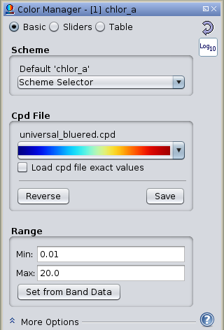
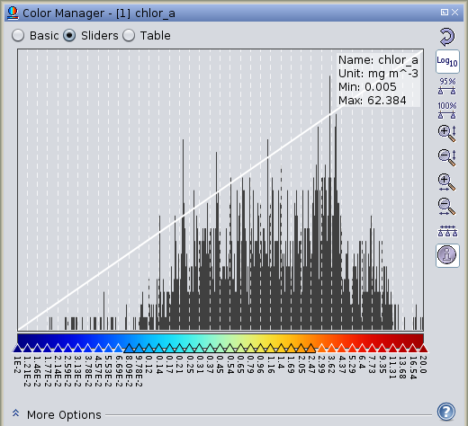
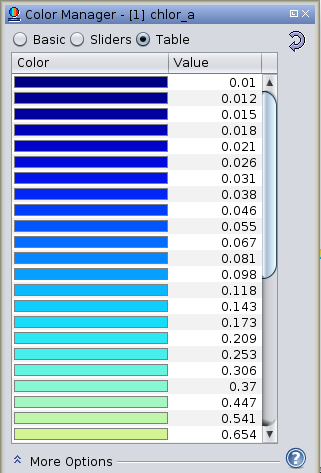

The  Color Manager tool displays and modifies the color scheme
and color palette used in a visual image of a band's data.
Color Manager tool displays and modifies the color scheme
and color palette used in a visual image of a band's data.
Tools -> Tool Windows -> Color Manager
Also available as a docked tab (default layout: lower left side)
Schemes and Palettes
A color palette refers to a set of rgb color values with corresponding (preferably normalized) data values.
A color scheme denotes which color palette to use, the minimum and maximum values to apply to the palette,
and whether the palette is to be displayed with log or linear scaling.
The color palettes are stored in color palette definition (cpd) text files. New cpd files can be created
within SeaDAS and saved with the "Save CPD File" button.
The color schemes are stored in the following text files:
- defaults_color_palette_schemes.txt : contains the schemes which will be loaded by default keyed on the band's
name.
- standard_color_palette_schemes.txt : contains the user selectable schemes
Note: All color schemes and cpd files are located in the .seadas directory
(~/.seadas/beam-ui/auxdata/color-palettes/). External cpd files can be copied into this directory and will show up
in SeaDAS when it is next launched. Scheme files can be hand-edited to add new schemes or modify existing ones.
Editors
The color manager contains 3 editor screens:
- Basic Editor:
- load scheme
- load/save cpd file
- set range minimum maximum
- Sliders Editor:
- displays histogram on top of color-bar
- automatically or manually adjust individual color-value pairs using movable sliders
- add/remove color-value pairs
- generate statistics for minimum and maximum band data value
- Table Editor:
- change color-value pairs using a text field table
Basic Editor

Icons
 : resets to the default color scheme
: resets to the default color scheme : toggles between log and linear display, redistributing palette points accordingly
: toggles between log and linear display, redistributing palette points accordingly : applies current selected color scheme to other bands
: applies current selected color scheme to other bands
Scheme Panel
- Standard Schemes Selector : Select and load a pre-defined scheme. The
loaded scheme name will be displayed directly above this selector. Any alteration to parameters subsequent to
selection of a scheme will result in an asterisks displayed with the scheme name.
Note: this selector selects schemes from the 'standard_color_palette_schemes.txt' file,
if the scheme was loaded by default then the scheme name comes from 'defaults_color_palette_schemes.txt' file.
Cdp File Panel
- Color Bar Selector : Select a cpd file. Selector shows a visual representation of each color palette as a
color bar. Hovering the mouse over a selection will display it's cpd file name.
- Load cpd file exact values : selecting this checkbox will load in the cpd file values exactly as they are,
replacing the currently loaded Minimum and Maximum range values as well as the log scaling with those of the cpd
file. Unchecked, the behaviour is to just load in the palette, maintain the user selected log scaling, and
redistribute the palette data points between the user selected Minimum and Maximum range values.
- Save CPD File Button : save the current settings to a new cpd file name. Once saved, this new cpd file
becomes the currently selected cpd file in the Schemes Panel.
Range Panel
- Min Textfield : redistributes the palette using this minimum range value
- Max Textfield : redistributes the palette using this maximum range value
- Set from Band Data Button : redistributes the palette using band data statistics to determine the
minimum and maximum range value.
Sliders Editor

Sliders
- Change Data Value : left clicking a slider and moving it will alters it data value for that data/color pairing point.
- Change Color : left clicking a slider brings about a color dialog box to enable an alteration of the color
for that data/color pairing point.
- Add Point Pairing Point : right click a slider to add a new point AFTER the slider clicked
- Remove Point Pairing Point : right click a slider to remove that slider's data/color pairing point
Rough Statistics : this underlined selected option will appear in the information above the histogram display
if the current statistics are rough statistics. Clicking on this will enable the running a complete band statistics
which includes all pixel data value in the determination of the data minimum and maximum range.
Icons
- : resets to the default color scheme
- : toggles between log and linear display, redistributing palette points accordingly
- : applies current selected color scheme to other bands
 : adjusts the sliders to cover 95% of all pixels in the band.
: adjusts the sliders to cover 95% of all pixels in the band. : adjusts the sliders to cover 100% of all pixels in the band.
: adjusts the sliders to cover 100% of all pixels in the band. : zoom in on the histogram display vertically
: zoom in on the histogram display vertically  : zoom out on the histogram display vertically
: zoom out on the histogram display vertically  : zoom in on the histogram display horizontally
: zoom in on the histogram display horizontally  : zoom out on the histogram display horizontally
: zoom out on the histogram display horizontally  : distributes the sliders evenly between the first and the last slider.
: distributes the sliders evenly between the first and the last slider. : toggles visibility of statistic information in histogram display
: toggles visibility of statistic information in histogram display
Table Editor

For each data/color pairing point the color and/or it's data value can be changed with this editor.
Icons
- : resets to the default color scheme
- : toggles between log and linear display, redistributing palette points accordingly
More Options
- No-data color : selects no-data color for this band
- Histogram matching : It is sometimes desirable to transform an image so that it's histogram matches that of a
specified functional form. It is possible to apply an equalized or normalized
histogram matching to images which can often improve image quality.
- Discrete colors : use only the discrete colors as defined in the palette
RGB Image
Images using separate R,G,B channels use obtain their colours from the samples of three arbitrary bands. In the
editor, users
can switch between the channels in order to edit the contrast stretch range and gamma value of each channel
separately.

In this mode the sliders are used for contrast stretching in each of the R,G,B channels.
In the More Options panels, you can adjust the No-Data Colour and
Histogram Matching for the final image. The Source Band and Gamma
options
apply to each channel. The gamma value is used to adapt the transfer function which quantises the band's
sample values to colour values. A gamma value of 0.7 for the blue channel enhances most
RGB images.